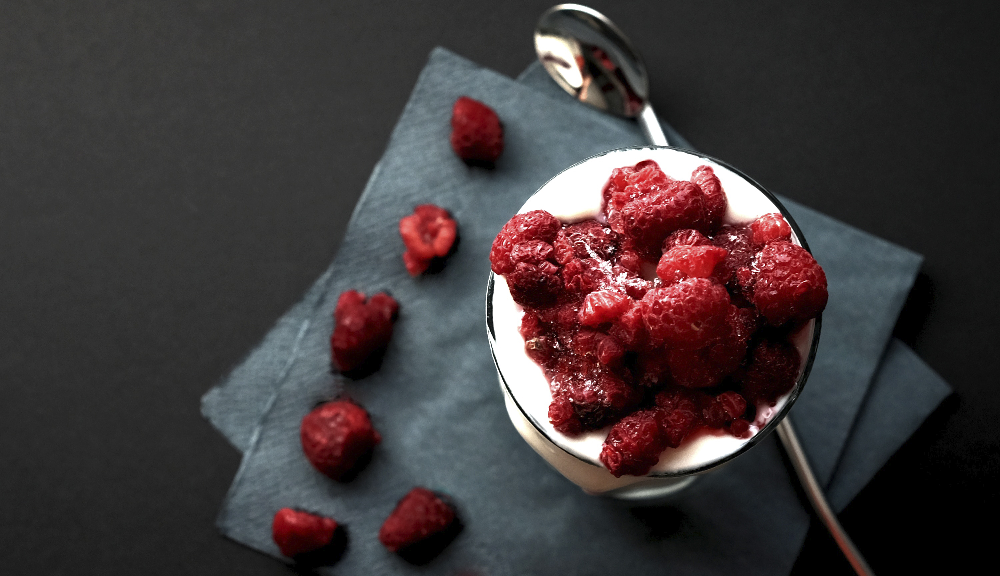
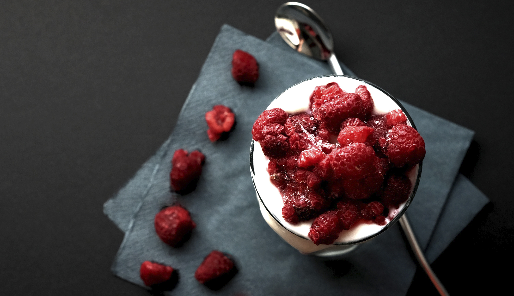

Bær Bomben
I denne smoothie har vi tre forskellige bær som er jordbær, blåbær og hindbær. Derudover har vi banan, yoghurt og honning hvilket skaber en perfekt smagsoplevelse for alle.
I denne smoothie har vi tre forskellige bær som er jordbær, blåbær og hindbær. Derudover har vi banan, yoghurt og honning hvilket skaber en perfekt smagsoplevelse for alle.
Vi vil gerne være stedet du kommer til på farten, så du kan få en god og sund smoothie med på din vej. Derfor vil vi kombinere grøntsager og frugt i alle vores produkter.